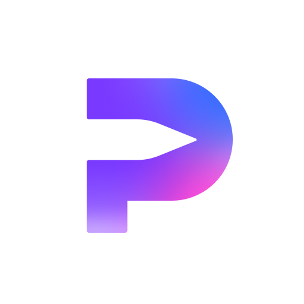
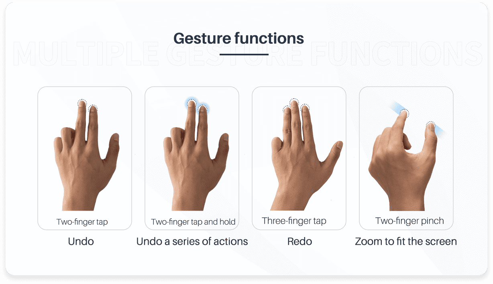
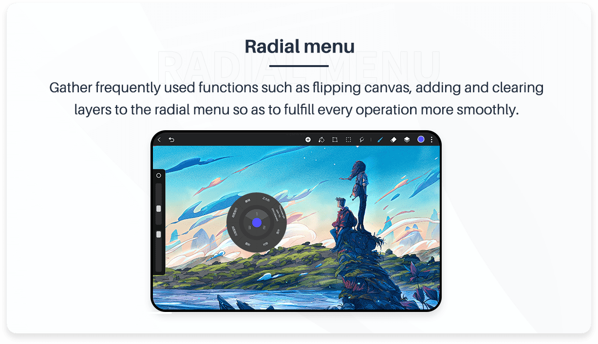

HiPaint 迭代三年，从"手机上的 PS"到独立生态画具
一款国产安卓绘画 App 的成长轨迹——从 2022 年的初版到今天的动画分镜级工具，团队一直在死磕什么、又在回避什么。
现状：这版它能做什么
如果你现在去应用商店搜 HiPaint，截图里最显眼的不是画笔也不是调色板——是动画面板。多帧时间轴、帧率滑块、洋葱皮预览，一套完整的逐帧动画管线摆在那，把"绘画 App"的范畴直接拉到了分镜工具的领地。我第一次打开时愣了一下：这到底是给谁用的？
答案很快就有了。最新版的功能面板塞进了 15 种滤镜、非破坏性的图层系统、自定义形状工具、对称与平铺辅助线，还有那套让人头皮发麻的笔刷引擎——支持 HBR 格式导入，意味着 Krita 用户可以直接搬自己的笔刷库过来。整个界面的密度接近桌面端软件，但又强行适配了触屏操作：右侧滑出滤镜面板、底部快速切换画笔、双指缩放画布的同时可以弹出快捷键轮盘。

它的官网低调得不像一个在 App Store 付费排行榜上能看到的产品，没有营销语轰炸，只有一份干净的功能清单和下载入口。HiPaint 下载不需要翻墙，国内应用商店和网盘双渠道覆盖，这一点对移动端用户的体验差异巨大——我试过在别的绘画 App 里因为 Google Play 连接超时卡了三天，HiPaint 不会让你经历这种事。
来路：它从哪起步
去 HiPaint 文档里翻了一下，没有写版本号，也没做 changelog 整理——这种"不留家谱"的做法反而暴露了一个有趣的事实：HiPaint 的迭代节奏是实用主义的，不是里程碑式的。没有 1.0、2.0 那种大爆炸版本，只有每隔一两个月推一次的小更。
我从社区的零散讨论里拼出了大概时间线。2022 年底初代版本上线时，它的定位是"安卓上最接近 PC 绘画体验的 App"，那时候核心卖点是图层和自定义画笔——这在当时的移动端绘画软件里确实少见，大多数竞品还在做单图层涂鸦板。紧接着 2023 年中，滤镜面板一次性塞进来 15 种，色彩平衡、HSB 三要素、液化变形，直接把调色能力拉到了专业级。同一年底动画面板上线，多帧时间轴和洋葱皮预览让它从"画图工具"变成了"能动起来的画图工具"。
2024 年是工具补全年——形状工具、对称模式、平铺辅助线、渐变工具，这些桌面端软件的标准配置一个接一个补上。形状工具的拖拽控制点、填充与描边分离调节、边缘平滑开关，这些细节做得很认真，看得出是用桌面软件的标准在对标。

但反过来看，文档站里没有任何一个版本专门宣布"我们换了渲染引擎"或者"重写了 UI"。底层的东西它一直在默默迭代，但从不拿出来当卖点。你用着用着发现笔刷响应延迟变小了、滤镜计算变快了，但翻遍找不到版本说明——这是典型的工程团队思维：能用就不嚷，不行就直接修。
规律：团队一直在死磕什么
从迭代优先级来看，这个团队的核心执念很清晰——移动端上模拟桌面端的完整工作流。
笔刷引擎是第一优先级。HBR 格式导入、压力感应适配、笔尖动力学模拟，这些是 HiPaint 早期花了最多精力打磨的部分，也是它和 SketchBook、Infinite Painter 拉开差距的地方。你在 HiPaint 里用一支 Krita 的笔刷画出来的质感，和在 PC 上几乎没差。
第二优先级是非破坏性编辑。滤镜以独立图层存在，可以随时开关、调强度、加蒙版；动画面板的每一帧都是独立图层，可以单独修改不影响其他帧；图层组和混合模式也是桌面软件的标准范式——这让它不只是个画图玩具，而是真的能出量产级作品的工具。
但有几样东西它一直没碰。文字工具到现在还是最基础的输入框，没有富文本编辑、没有路径环绕、没有自动换行对齐。选区工具做了，但没做"基于颜色选择"的一键魔棒（容差调节是个半吊子，只能靠手动勾选区）。文件管理也很朴素——没有云同步、没有跨设备接力、没有工程文件版本历史。

这暴露了团队的取舍策略：先把"画"这件事做透，再考虑"画之外"的所有事。文字、管理、协同都是"画之外"，所以优先级永远往后排。
预判：下一步会往哪走
这套迭代逻辑继续推的话，下一步最可能出现的是文本工具的完整重写。现在它已经有了非破坏性编辑的底子，图层面板里文字和形状都是独立图层，重写文本工具不需要动底层架构，只是把功能补齐。而且社区里要这个的呼声一直很高，属于"该做的事"。
选区工具的魔棒功能也是大概率事件。现在手动勾选区已经够用了，但做插画的人需要快速选颜色区域来做批量调色，手动勾效率太低。这是一个用户体验痛点的补齐，不是新功能探索。
不太可能出现的，是云同步和多设备协同。那属于"画之外"的基础设施投入，和团队当前的节奏不符。他们更可能继续在本地渲染引擎和笔刷生态上做文章——比如支持更多笔刷格式、优化大图的滤镜渲染速度。
当然，这些都是从迭代规律推的，不是官方说法。HiPaint 文档里没写版本号、没写 Roadmap，连 changelog 都没有——它更像一个持续打磨的工具而不是一个需要被运营的产品。这种不做产品包装的姿态，反而让它的迭代规律特别清晰：什么对用户的"画"有用就做什么，没用的一律不碰。
从第一版到现在，三年过去了。HiPaint 没有变成另一个"全平台大一统的创意套件"，它老老实实待在安卓（以及后来的鸿蒙）生态里，把一件事做到了极致：让移动端画画这件事，不再需要和桌面端妥协。它的功能清单和使用说明同步维护在三个代码仓库里，主力在 GitHub，国内镜像放了 Gitee 和 GitCode，访问哪个顺手就去哪个。